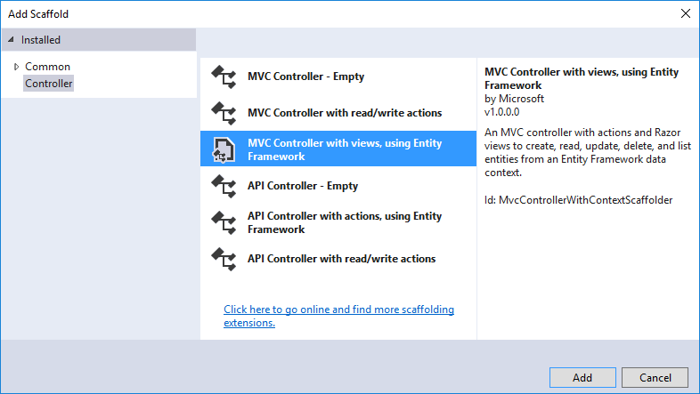
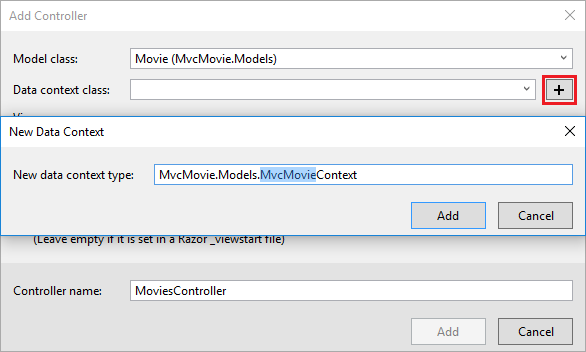

Adding a model to an ASP.NET Core MVC app
By Rick Anderson and Tom Dykstra
In this section, you'll add some classes for managing movies in a database. These classes will be the "Model" part of the MVC app.
You use these classes with Entity Framework Core (EF Core) to work with a database. EF Core is an object-relational mapping (ORM) framework that simplifies the data access code that you have to write. EF Core supports many database engines.
The model classes you'll create are known as POCO classes (from "plain-old CLR objects") because they don't have any dependency on EF Core. They just define the properties of the data that will be stored in the database.
In this tutorial you'll write the model classes first, and EF Core will create the database. An alternate approach not covered here is to generate model classes from an already-existing database. For information about that approach, see ASP.NET Core - Existing Database.
Add a data model class
Note: The ASP.NET Core 2.0 templates contain the Models folder.
In Solution Explorer, right click the MvcMovie project > Add > New Folder. Name the folder Models.
Right click the Models folder > Add > Class. Name the class Movie and add the following properties:
using System;
namespace MvcMovie.Models
{
public class Movie
{
public int ID { get; set; }
public string Title { get; set; }
public DateTime ReleaseDate { get; set; }
public string Genre { get; set; }
public decimal Price { get; set; }
}
}
The ID field is required by the database for the primary key.
Build the project to verify you don't have any errors. You now have a Model in your MVC app.
Scaffolding a controller
In Solution Explorer, right-click the Controllers folder > Add > Controller.

In the Add MVC Dependencies dialog, select Minimal Dependencies, and select Add.

Visual Studio adds the dependencies needed to scaffold a controller, but the controller itself is not created. The next invoke of > Add > Controller creates the controller.
In Solution Explorer, right-click the Controllers folder > Add > Controller.
In the Add Scaffold dialog, tap MVC Controller with views, using Entity Framework > Add.

Complete the Add Controller dialog:
- Model class: Movie (MvcMovie.Models)
- Data context class: Select the + icon and add the default MvcMovie.Models.MvcMovieContext

- Views: Keep the default of each option checked
- Controller name: Keep the default MoviesController
- Tap Add

Visual Studio creates:
- An Entity Framework Core database context class (Data/MvcMovieContext.cs)
- A movies controller (Controllers/MoviesController.cs)
- Razor view files for Create, Delete, Details, Edit and Index pages (Views/Movies/*.cshtml)
The automatic creation of the database context and CRUD (create, read, update, and delete) action methods and views is known as scaffolding. You'll soon have a fully functional web application that lets you manage a movie database.
If you run the app and click on the Mvc Movie link, you'll get an error similar to the following:
An unhandled exception occurred while processing the request.
SqlException: Cannot open database "MvcMovieContext-<GUID removed>" requested by the login. The login failed.
Login failed for user 'Rick'.
System.Data.SqlClient.SqlInternalConnectionTds..ctor(DbConnectionPoolIdentity identity, SqlConnectionString
You need to create the database, and you'll use the EF Core Migrations feature to do that. Migrations lets you create a database that matches your data model and update the database schema when your data model changes.
Add EF tooling and perform initial migration
In this section you'll use the Package Manager Console (PMC) to:
- Add the Entity Framework Core Tools package. This package is required to add migrations and update the database.
- Add an initial migration.
- Update the database with the initial migration.
From the Tools menu, select NuGet Package Manager > Package Manager Console.

In the PMC, enter the following commands:
Install-Package Microsoft.EntityFrameworkCore.Tools
Add-Migration Initial
Update-Database
Note: If you receive an error with the Install-Package command, open NuGet Package Manager and search for the Microsoft.EntityFrameworkCore.Tools package. This allows you to install the package or check if it is already installed. Alternatively, see the CLI approach if you have problems with the PMC.
The Add-Migration command creates code to create the initial database schema. The schema is based on the model specified in the DbContext(In the Data/MvcMovieContext.cs file). The Initial argument is used to name the migrations. You can use any name, but by convention you choose a name that describes the migration. See Introduction to migrations for more information.
The Update-Database command runs the Up method in the Migrations/<time-stamp>_InitialCreate.cs file, which creates the database.
You can perform the preceeding steps using the command-line interface (CLI) rather than the PMC:
- Add EF Core tooling to the .csproj file.
Run the following commands from the console (in the project directory):
dotnet ef migrations add InitialCreate dotnet ef database update
Test the app
- Run the app and tap the Mvc Movie link.
Tap the Create New link and create a movie.

You may not be able to enter decimal points or commas in the
Pricefield. To support jQuery validation for non-English locales that use a comma (",") for a decimal point, and non US-English date formats, you must take steps to globalize your app. See https://github.com/aspnet/Docs/issues/4076 and Additional resources for more information. For now, just enter whole numbers like 10.
- In some locales you need to specify the date format. See the highlighted code below.
using System;
using System.ComponentModel.DataAnnotations;
namespace MvcMovie.Models
{
public class Movie
{
public int ID { get; set; }
public string Title { get; set; }
[DisplayFormat(DataFormatString = "{0:yyyy-MM-dd}", ApplyFormatInEditMode = true)]
public DateTime ReleaseDate { get; set; }
public string Genre { get; set; }
public decimal Price { get; set; }
}
}
We'll talk about DataAnnotations later in the tutorial.
Tapping Create causes the form to be posted to the server, where the movie information is saved in a database. The app redirects to the /Movies URL, where the newly created movie information is displayed.

Create a couple more movie entries. Try the Edit, Details, and Delete links, which are all functional.
public void ConfigureServices(IServiceCollection services)
{
// Add framework services.
services.AddMvc();
services.AddDbContext<MvcMovieContext>(options =>
options.UseSqlServer(Configuration.GetConnectionString("MvcMovieContext")));
}
The highlighted code above shows the movie database context being added to the Dependency Injection container. The line following services.AddDbContext<MvcMovieContext>(options => is not shown (see your code). It specifies the database to use and the connection string. => is a lambda operator.
Open the Controllers/MoviesController.cs file and examine the constructor:
public class MoviesController : Controller
{
private readonly MvcMovieContext _context;
public MoviesController(MvcMovieContext context)
{
_context = context;
}
The constructor uses Dependency Injection to inject the database context (MvcMovieContext) into the controller. The database context is used in each of the CRUD methods in the controller.
Strongly typed models and the @model keyword
Earlier in this tutorial, you saw how a controller can pass data or objects to a view using the ViewData dictionary. The ViewData dictionary is a dynamic object that provides a convenient late-bound way to pass information to a view.
MVC also provides the ability to pass strongly typed model objects to a view. This strongly typed approach enables better compile-time checking of your code. The scaffolding mechanism used this approach (that is, passing a strongly typed model) with the MoviesController class and views when it created the methods and views.
Examine the generated Details method in the Controllers/MoviesController.cs file:
// GET: Movies/Details/5
public async Task<IActionResult> Details(int? id)
{
if (id == null)
{
return NotFound();
}
var movie = await _context.Movie
.SingleOrDefaultAsync(m => m.ID == id);
if (movie == null)
{
return NotFound();
}
return View(movie);
}
The id parameter is generally passed as route data. For example http://localhost:5000/movies/details/1 sets:
- The controller to the
moviescontroller (the first URL segment). - The action to
details(the second URL segment). - The id to 1 (the last URL segment).
You can also pass in the id with a query string as follows:
http://localhost:1234/movies/details?id=1
The id parameter is defined as a nullable type (int?) in case an ID value is not provided.
A lambda expression is passed in to SingleOrDefaultAsync to select movie entities that match the route data or query string value.
var movie = await _context.Movie
.SingleOrDefaultAsync(m => m.ID == id);
If a movie is found, an instance of the Movie model is passed to the Details view:
return View(movie);
Examine the contents of the Views/Movies/Details.cshtml file:
@model MvcMovie.Models.Movie
@{
ViewData["Title"] = "Details";
}
<h2>Details</h2>
<div>
<h4>Movie</h4>
<hr />
<dl class="dl-horizontal">
<dt>
@Html.DisplayNameFor(model => model.Title)
</dt>
<dd>
@Html.DisplayFor(model => model.Title)
</dd>
<dt>
@Html.DisplayNameFor(model => model.ReleaseDate)
</dt>
<dd>
@Html.DisplayFor(model => model.ReleaseDate)
</dd>
<dt>
@Html.DisplayNameFor(model => model.Genre)
</dt>
<dd>
@Html.DisplayFor(model => model.Genre)
</dd>
<dt>
@Html.DisplayNameFor(model => model.Price)
</dt>
<dd>
@Html.DisplayFor(model => model.Price)
</dd>
</dl>
</div>
<div>
<a asp-action="Edit" asp-route-id="@Model.ID">Edit</a> |
<a asp-action="Index">Back to List</a>
</div>
By including a @model statement at the top of the view file, you can specify the type of object that the view expects. When you created the movie controller, Visual Studio automatically included the following @model statement at the top of the Details.cshtml file:
@model MvcMovie.Models.Movie
This @model directive allows you to access the movie that the controller passed to the view by using a Model object that's strongly typed. For example, in the Details.cshtml view, the code passes each movie field to the DisplayNameFor and DisplayFor HTML Helpers with the strongly typed Model object. The Create and Edit methods and views also pass a Movie model object.
Examine the Index.cshtml view and the Index method in the Movies controller. Notice how the code creates a List object when it calls the View method. The code passes this Movies list from the Index action method to the view:
// GET: Movies
public async Task<IActionResult> Index()
{
return View(await _context.Movie.ToListAsync());
}
When you created the movies controller, scaffolding automatically included the following @model statement at the top of the Index.cshtml file:
@model IEnumerable<MvcMovie.Models.Movie>
The @model directive allows you to access the list of movies that the controller passed to the view by using a Model object that's strongly typed. For example, in the Index.cshtml view, the code loops through the movies with a foreach statement over the strongly typed Model object:
@model IEnumerable<MvcMovie.Models.Movie>
@{
ViewData["Title"] = "Index";
}
<h2>Index</h2>
<p>
<a asp-action="Create">Create New</a>
</p>
<table class="table">
<thead>
<tr>
<th>
@Html.DisplayNameFor(model => model.Title)
</th>
<th>
@Html.DisplayNameFor(model => model.ReleaseDate)
</th>
<th>
@Html.DisplayNameFor(model => model.Genre)
</th>
<th>
@Html.DisplayNameFor(model => model.Price)
</th>
<th></th>
</tr>
</thead>
<tbody>
@foreach (var item in Model) {
<tr>
<td>
@Html.DisplayFor(modelItem => item.Title)
</td>
<td>
@Html.DisplayFor(modelItem => item.ReleaseDate)
</td>
<td>
@Html.DisplayFor(modelItem => item.Genre)
</td>
<td>
@Html.DisplayFor(modelItem => item.Price)
</td>
<td>
<a asp-action="Edit" asp-route-id="@item.ID">Edit</a> |
<a asp-action="Details" asp-route-id="@item.ID">Details</a> |
<a asp-action="Delete" asp-route-id="@item.ID">Delete</a>
</td>
</tr>
}
</tbody>
</table>
Because the Model object is strongly typed (as an IEnumerable<Movie> object), each item in the loop is typed as Movie. Among other benefits, this means that you get compile-time checking of the code: